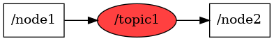

<body>
<a href="../full_graph.html">back to big graph</a>
<br />

<map id="_topic1" name="_topic1">
<area shape="rect" id="node1" href="_node1.html" title="node: /node1" alt="" coords="5,5,92,53"/>
<area shape="poly" id="node2" href="_topic1.html" title="node: /topic1" alt="" coords="253,29,250,22,242,15,229,10,214,7,196,5,179,7,163,10,151,15,143,22,140,29,143,37,151,43,163,49,179,52,196,53,214,52,229,49,242,43,250,37"/>
<area shape="rect" id="node3" href="_node2.html" title="node: /node2" alt="" coords="301,5,387,53"/>
</map>


</body>
